1. 真实地图
用 ljh20260516.pcd 转 2D occupancy map，默认降噪，保留通道结构并减少孤立噪点。
AMR / Coverage System
ROS 2 真车覆盖作业、导航安全链与 DS20270C 轮毂底盘
AMR2 不是单独的导航 demo，而是一条从真实点云地图、真实 SolidWorks 底盘、覆盖路径规划、Web 3D 控制台，到 Nav2 和底盘安全链的端到端机器人系统。它把原来容易分散的“真车系统”和“覆盖路径规划”合并到同一条可验证链路里。

At A Glance
真实 AMR 轮毂伺服差速底盘，使用真实 CAD mesh 和真实 footprint 做仿真约束。
5 条主通道 基于真实 PCD 地图抽取长通道，做可解释的覆盖路径验证。
0.486 x 0.450 m 按 AMR2 实际车体 footprint 做地图裁剪、避障膨胀和安全间隙。
0x602 / dry-run DS20270C 差速 CAN 链路保留 dry-run、自检、诊断和真车安全门。
System Chain
用 ljh20260516.pcd 转 2D occupancy map，默认降噪，保留通道结构并减少孤立噪点。
RViz Rect/Poly 或服务 polygon 输入区域，算法结合 footprint、known-free 裁剪和 A* 连接生成路径。
Web 控制台自动启动 rosbridge，加载真实 STL，小车位姿由 /Odometry 同步。
覆盖路径可转换为 FollowWaypoints 或 NavigateToPose，默认 dry-run，不自动发车。
真车速度继续走 /cmd_vel_nav -> smoother -> collision_monitor -> /cmd_vel_smooth -> DS20270C。
Visual Evidence
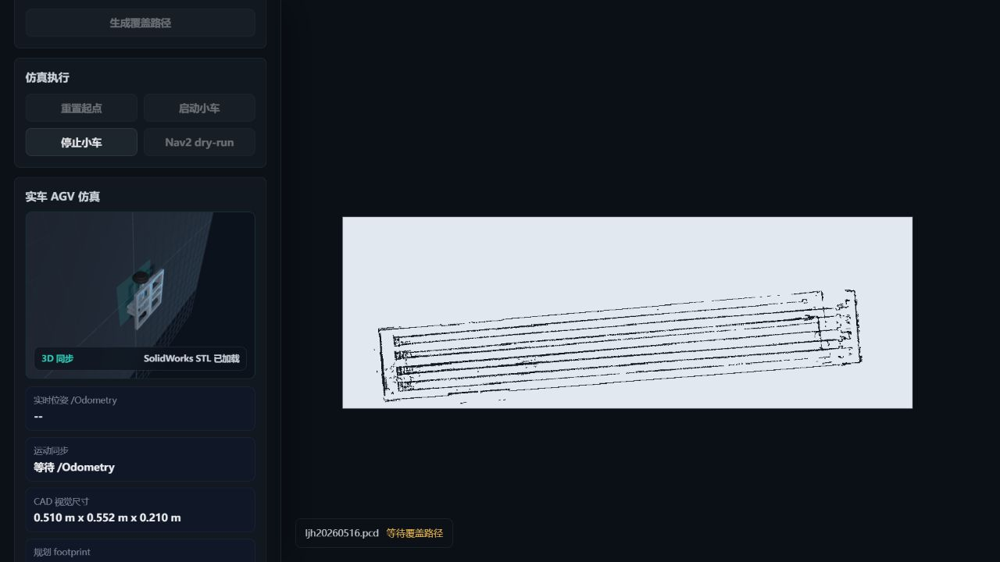
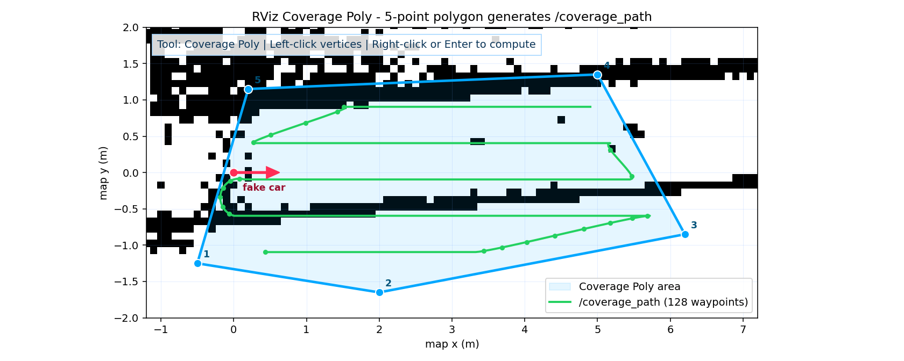
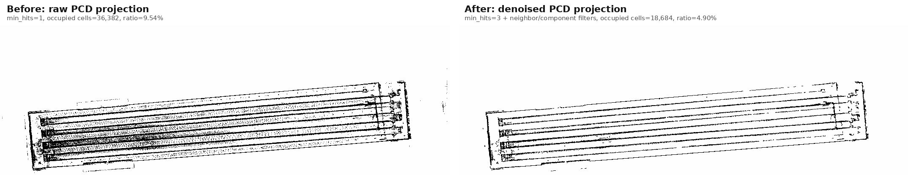
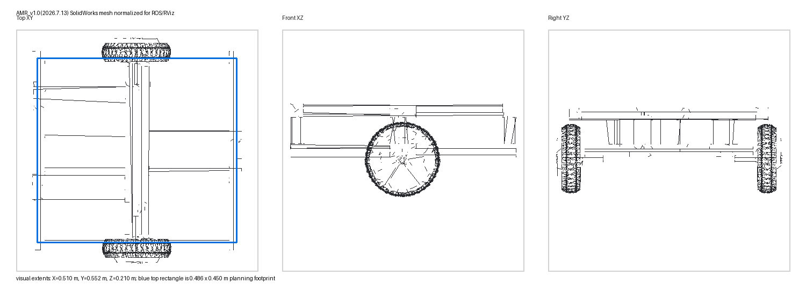
ROS2 Web Console
ljh_robot_ros2_web 是 AMR2 真车链路里的 Web 操作层：它通过 rosbridge 连接 ROS/ROS2，把地图图层、机器人位姿、导航目标、任务状态和 RViz 对照结果放到浏览器里，方便在实验现场快速看清“机器人在哪里、目标在哪里、路径是否可信、Web 和 RViz 是否一致”。

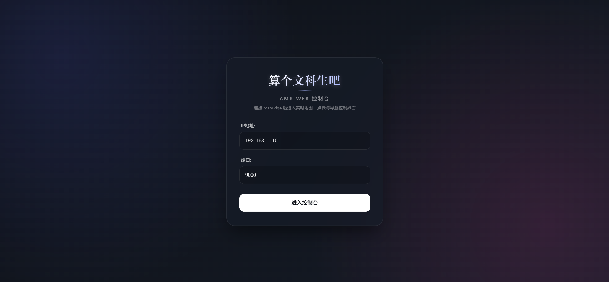
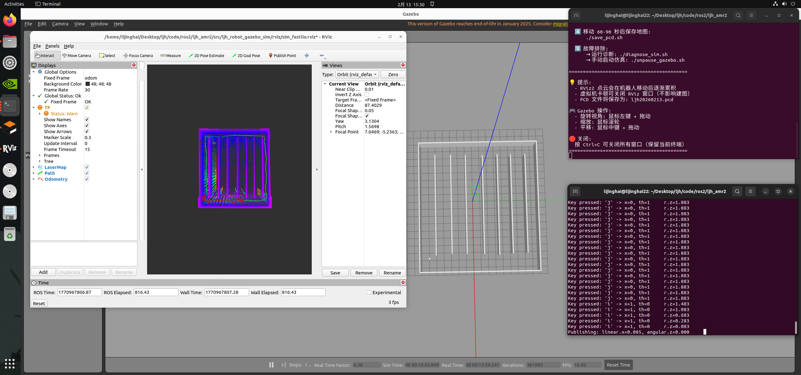
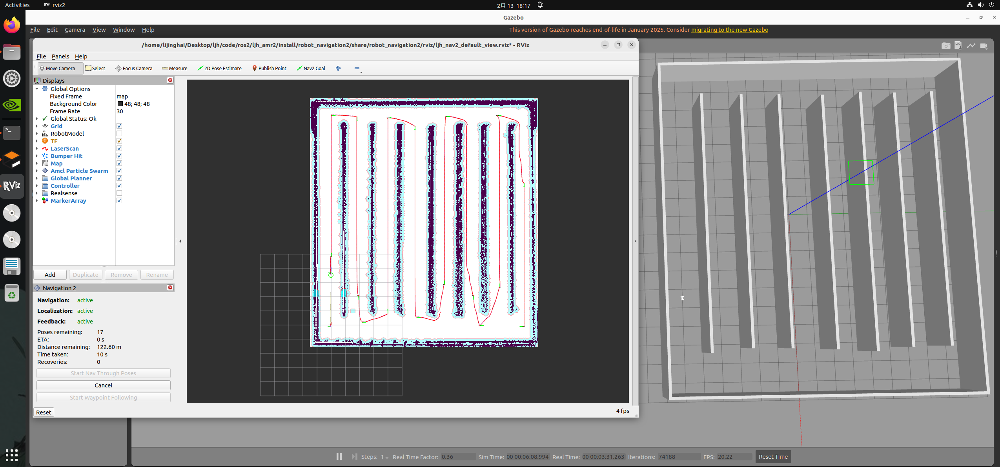
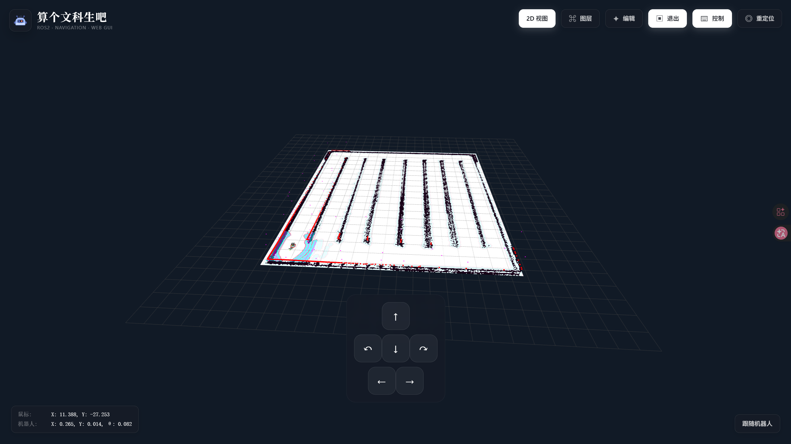

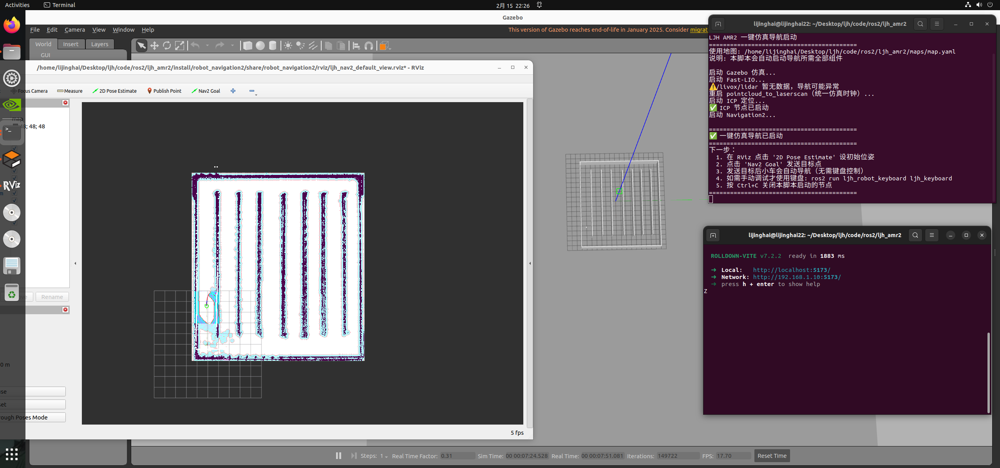
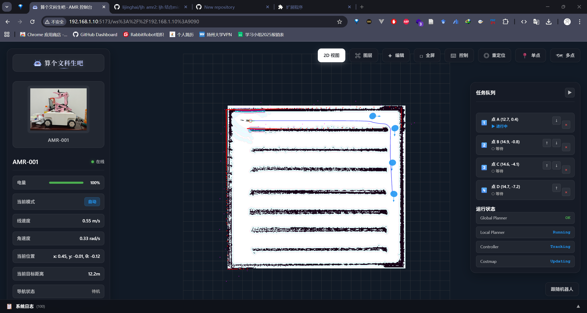
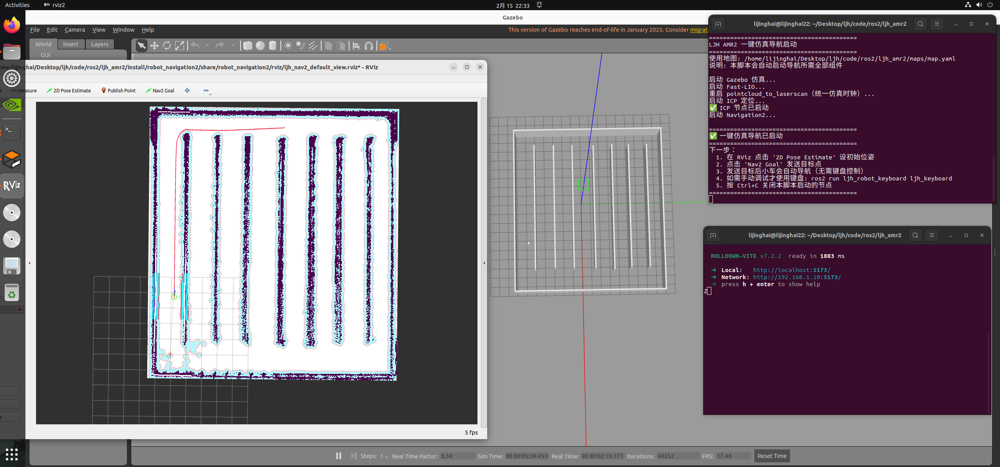
What I Built
save_2dmap.sh。/cmd_vel_smooth，并加入只读参数审查和运行诊断。Verification
| 验证对象 | 结果 | 说明 |
|---|---|---|
| 覆盖仿真服务 | PASS | PCD 地图加载、主 5 通道覆盖、多边形覆盖、Nav2 dry-run 和 fake car 移动均通过。 |
| Web 控制台 | PASS | npm run build、浏览器 3D WebGL、rosbridge 自动启动和移动端 390px 检查通过。 |
| ROS 2 构建 | PASS | ljh_robot_msg、ljh_robot_coverage、ljh_rviz2、ljh_robot_sim、robot_navigation2、ljh_robot_ds20270c_can_driver 6 包构建通过。 |
| DS20270C 驱动 | PASS / dry-run | 状态话题、0x602 配置、运行诊断字段、前进/后退/停止速度斜坡通过 dry-run 自检。 |
| 真车运动 | Safety gated | 覆盖算法不直接控车；真实运动必须现场急停可用、轮子架空、人旁站守，再显式开启 bench test。 |
System Value
这个项目的价值不只是“会 ROS 2”或者“做过一个网页”。更关键的是把真实机器人里的多层系统同时对齐：地图数据要能被算法用，算法输出要能被 RViz 和 Web 看懂，Web 不能绕过安全链，底盘驱动不能把调试命令直接变成风险动作，所有结果还要留下可复查证据。